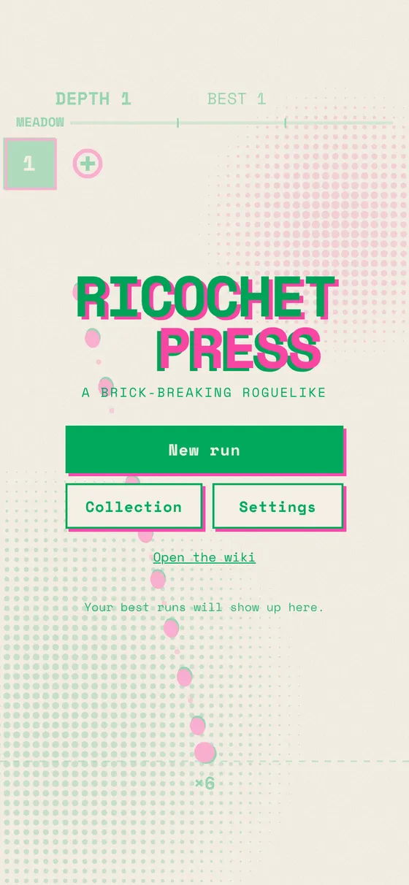
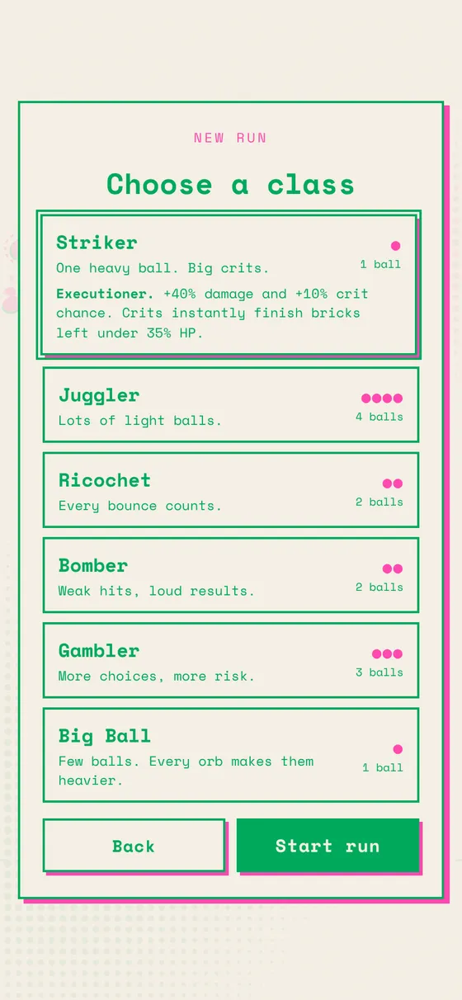

RicochetPress
A turn-based, aim-and-shoot brick breaker roguelike for phones held in portrait. Break bricks before they reach the bottom, and grab orbs along the way.
New run
Choose a class
Striker ●
One heavy ball. Big crits.
Juggler ●●●●
Lots of light balls.
Ricochet ●●
Every bounce counts.
Bomber ●●
Weak hits, loud results.
Gambler ●●●
More choices, more risk.
Big Ball ●
Every orb makes it heavier.

